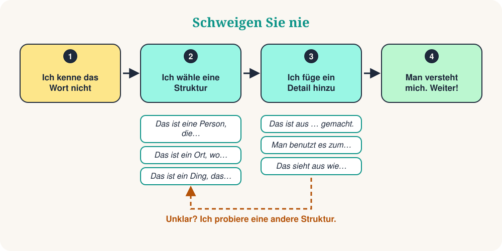

Sie sind auf dem Markt. Sie möchten ein Ladegerät kaufen, aber das Wort ist weg. Ihr Kopf sagt: Übersetze! Es gibt einen besseren Weg. Suchen Sie nicht das fehlende Wort. Beschreiben Sie es.
Das ist eine echte Fähigkeit, und auch Muttersprachler benutzen sie. Mit 10 Satzstrukturen können Sie eine Person, einen Ort, einen Gegenstand oder einen Moment beschreiben. Oft nennt Ihnen der andere das Wort. Dann sprechen Sie einfach weiter.

Die 10 Satzstrukturen
Lernen Sie die Struktur, nicht das Wort. Lesen Sie das Beispiel laut und probieren Sie dieselbe Struktur mit einem neuen Wort.
| # | Struktur | Beispiel | Hilft Ihnen zu beschreiben |
|---|---|---|---|
| 1 | Das ist eine Person, die… | Das ist eine Person, die Kinder unterrichtet. | eine Person (Lehrerin) |
| 2 | Das ist ein Ort, wo… | Das ist ein Ort, wo man Essen kauft. | einen Ort (Markt) |
| 3 | Das ist ein Ding, das… | Das ist ein Ding, das die Uhrzeit zeigt. | einen Gegenstand (Uhr) |
| 4 | Das benutzt man, um … zu… | Das benutzt man, um zu schreiben. | ein Werkzeug (Stift) |
| 5 | Das ist eine Zeit, in der… | Das ist eine Zeit, in der man schläft. | einen Moment (Nacht) |
| 6 | Das ist ein Tag, an dem… | Das ist ein Tag, an dem man feiert. | einen besonderen Tag (Feiertag) |
| 7 | Zum Beispiel… | Ich mag Sport. Zum Beispiel Fußball und Tennis. | eine Idee: Beispiele geben |
| 8 | Das heißt… | „Riesig“ heißt sehr groß. | ein Wort: einfach erklären |
| 9 | Das sieht aus wie… | Das sieht aus wie ein kleiner Computer. | das Aussehen: vergleichen |
| 10 | Wie sagt man … auf Deutsch? | Wie sagt man das auf Deutsch? | jedes Wort: um Hilfe bitten |
So klingt es im Alltag
Der Kellner lächelt und bringt Ihnen einen Stift.
Context: In einem Café möchten Sie die Rechnung unterschreiben.
Ihr Gegenüber antwortet: „Der Markt? Zwei Straßen weiter.“
Context: In einer neuen Stadt suchen Sie den Markt.
Ihr Freund lacht: „Eine Banane!“
Context: Auf einer Party ist Ihnen das Wort entfallen.
10 Überlebenssätze
Das sind kleine Zusätze. Setzen Sie sie nach einer Struktur ein, um mehr Details zu geben.
| # | Satz | Beispiel |
|---|---|---|
| 1 | Das ist eine Art von… | Das ist eine Art von Tier. |
| 2 | Das ist aus … gemacht. | Das ist aus Holz oder Metall gemacht. |
| 3 | Man benutzt es zum… | Man benutzt es zum Reisen. |
| 4 | Das ist das Gegenteil von… | Das ist das Gegenteil von „teuer“. |
| 5 | Das klingt wie… | Das klingt wie Musik. |
| 6 | Das hat… | Das hat vier Räder. |
| 7 | Das ist ähnlich wie… | Das ist ähnlich wie ein Auto. |
| 8 | Das kommt aus… | Das kommt aus Italien. |
| 9 | Ich kenne das Wort nicht, aber… | Ich kenne das Wort nicht, aber es ist zum Kochen. |
| 10 | Können Sie das bitte wiederholen? | Entschuldigung, können Sie das bitte langsamer sagen? |
Die Methode in 3 Schritten
Beschreiben wir einen Regenschirm, ohne das Wort zu sagen:
- Kategorie: Das ist ein Ding, das einen schützt.
- Funktion: Man benutzt es, wenn es regnet.
- Detail: Das sieht aus wie ein kleines Dach.
Drei kurze Sätze. Der andere sagt „Ein Regenschirm!“ und das Gespräch geht weiter.
Vermeiden Sie diese 4 Fallen
Kurzes Quiz
❓ Ihnen fehlt das Wort „Bäckerei“. Welcher Satz funktioniert am besten?
„Das ist ein Ort, wo…“ ist die ideale Struktur für Orte. Der andere hört „Brot“ und „Ort“: eine Bäckerei!
❓ Welcher Satz beschreibt eine „Schere“?
Eine Schere ist ein Werkzeug, also passt „Das benutzt man, um … zu…“.
❓ Ein Freund sagt: „Das ist das Gegenteil von teuer.“ Welches Wort ist gemeint?
Das Gegenteil von „teuer“ ist „billig“. So erklären Sie Adjektive!
Ihr 5-Minuten-Training
- Schauen Sie sich um und wählen Sie 5 Gegenstände.
- Beschreiben Sie jeden mit einer Struktur, ohne den Namen zu sagen.
- Fügen Sie bei den zwei schwierigsten einen Überlebenssatz hinzu.
- Nehmen Sie sich auf und hören Sie Ihre Stimme an.
- Wiederholen Sie es morgen mit 5 neuen Gegenständen.
Zusammenfassung
Flüssig sprechen heißt nicht, jedes Wort zu kennen. Es heißt, nie zu verstummen. Lernen Sie die Strukturen, fügen Sie ein Detail hinzu und sprechen Sie weiter.
“Beschreiben Sie es. Übersetzen Sie es nicht.”